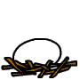

作文 打出の小づち
ここは「道場日記抄」からの抜粋のページです。
一振りたたくと、何かいいものが出てきます。 |
閑 話
「もくじ」の「項目」をクリックしてください。
※ 現在は青字で下線のある項目「１３」まで。
（「掲載年月日」をクリックすると、元の掲載ページに飛びます） |
※ '12、'13年についてはこちらへ。
小学生の作文と国語 中学生の作文と国語 高校生の国語
公立中高一貫校入試の作文 高校入試の作文・小論文 大学入試の小論文
作文ワールド（扉） 答案百花（扉） 作品展示場（扉）
Home（トップページ） 道場日記抄
打ち出の小づち－総もくじ； 作文編； 国語編； 小論文編
１．グルメトースト
|
補遺・補足 |
|
Aug.10 '03
「めっちゃ、うまいよ、あれ！ ２枚も食べちゃった」と、ゴリちゃん。
「そうそう、おいしい。私は今朝も………」と、アユちゃん。
「んっ？ ああ、あれか」と、タッちゃん。
４､５日前だったか、３時の休憩時間のことである。
夏期講習の午後は、中３生の専用時間となっている。
どんな話題からであったか、「バターとしょうゆはよく合うね」という話になった。「うん、そう、そう！ おいしい！」と、アユちゃん。「バターめしっての、食べたことある？」「ある、ある。炊き立てのご飯にバターを埋めて、溶けた頃にしょうゆをかけて、まぜっかえして食べる、あれでしょ」と、これはだれであったか。
ああ、それならと、ついつい秘話の公開となる。
「トーストにバターをうすく切ってのせる。その上にカツオブシをふりかける。ふわふわになるぐらいにね」「おいしそう」「その上にしょうゆを、ポツ、ポツとかける」「うあわー、たまんない。帰ったら作ってみよう」と、これはアユちゃん。
こうなると、話はきちんとしておかなくてはならぬ。「バターは１～２ミリの厚さがいいかな。しょうゆはポツ、ポツぐらいにして、かけすぎないようにね。カツオブシは細かく削ったもののほうがいい。食べやすい。５gや３gのパックに入ったのがある。５gではトースト１枚には多すぎる。３g入りがちょうどよいようだ」
以来、グルメ談議に花が咲く。長崎ちゃんぽんの店の品定め、トンカツに凝っている小学生の話まで出てくる。
道場はあと１日でお盆休みに入る。地場産グルメを訪ねる旅にでも出てみようか。
|
○ 「Ｂ級グルメ」というのがあるが、このトーストはＣ級ぐらいにはなるだろうか。 |
「Ｂ級グルメ」は、なぜＢ級なのか。
そのわけは、王侯・貴族の料理や高級レストランのフルコースの料理などとは違って、
気軽に食べられるというところにあるのだろう。
だが、Ｂだと謙遜はしても、味はＡなのだ。
謙遜の裏にはそのくらいの誇りと矜持が見てとれる。
その伝でいくと、グルメトーストも、
簡単に作れるという点ではＣかもしれないが、
味はＡだという矜持はある。
それは何より、しょうゆ（醤油）もバターもカツオ節も、
特に醤油は、
丹精込めて作られているのだ。味の悪かろうはずはない。
グルメトーストは、
味を拝借しているにすぎない。だが、それ故に、
味はＡ級なのだ。
もどる
２．かぼちゃまんじゅう
|
補遺・補足 |
Sep.24 '06
「ピン、ポーン」とドアフォンが鳴った。土曜日の朝、11時ごろのことである。
「かぼちゃまんじゅうかな」と、小５の理咲ちゃんが筆を止めて、微笑む。
出てみると、やはりそうだ。シゲおばさんが「おはよう。もってきたよ」と差し出す。うすい黄色のまんじゅうが６個、パックに納まっている。
シゲおばさんは、まんじゅうや水ようかん、くずもちなどを朝早く作って、お得意さんというか、ファンに自転車で配達している。そして、余ると、道場に立ち寄る。のり巻やいなりずしの詰め合わせ、おこわをもっていることもある。かぼちゃまんじゅうはオリジナルのようだ。かぼちゃのあんこが薄皮で包まれている。
理咲ちゃんはかぼちゃまんじゅうが気に入っているので、理咲ちゃんの来る日にかぼちゃまんじゅうがあれば、たいていは買う。先週は売り切れていたので、予約する格好になった。このため、いつもは他のまんじゅうとの組み合わせになっているのだが、この日はオールかぼちゃまんじゅうになっていた。
その時間に作文を書いていたのは、他に小５の文隆くんと小６の翼くんである。高２の諒くんは帰ったばかりであったので、ちょうど２つずつ分けられる。
文隆くんはさっそくぱくりとやった。理咲ちゃんはお母さんと食べるのだと言って、机の上にお供えのように重ねて置いている。翼くんは、来てまだ日が浅いせいか、遠慮がちで手もつけない。
文隆くんは「おいしい」と言って、２つ目を平らげた。理咲ちゃんはお腹が鳴るらしい。一区切り付いたところで「ああ、お腹が空いた」と言って、とうとう一つを割って口に放り込んだ。翼くんは見向きもしないで、せっせと書いている。翼君には土産に持たせることにした。
|
|
シゲおばさんの店は、国分寺跡の近くにあって、
ＮＨＫの「ぶらタモリ」という番組で紹介されたことがある。
今も土曜日には、シゲおばさんの声がかかる。
もどる
３．セミの脱皮
|
補遺・補足 |
|
Aug.12 '07
３～４日前のこと、夜10時過ぎにコンビニへ行く途中、神社の横の例の広場を通り抜けようとすると、老夫婦が懐中電灯で杉の大木を照らしながら「あっ、ここにもいる」「あら、ほんと。今出てくるところね」と話を交わしている。斜め向かいのご夫妻だ。セミが脱皮しているのだという。
近寄ると、電灯をかざして見せてくれた。杉の木につかまっているのもいれば、何かの葉っぱにぶら下がっているのもいる。羽がうすいみどり色だ。時間がたつにつれて、数分のうちに茶色に変わっていくという。今までこんなものは見たことがない。貴重な現象だ。さっそくカメラを取りに戻る。
後で分かったことだが、セミの脱皮はたいてい夜だという。だから、たいていの人の目には触れない。それもさることながら、脱皮時の羽の色は貴重な記録になるぞと思ったものだった。
セミは、あまり大きくないからアブラゼミではなく、ニイニイゼミのようだ。実際、翌日その付近で鳴いている声を聞くと、「ギーギー」というよりは「ジージー」という感じであった。だが、果たして当たっているだろうか。
|
|
生徒諸君にこの話をし、写真を見せると、
「見てみたい」と言う。
だが、夜中のことだ。そこで、次のような話をしておく。
「地面に１００円玉ぐらいの穴がいくつも開いている。
そこから、はい出すんだね。
ここへ来なくても、
近所の空き地でそんな穴が見つかれば、その近くの木で
脱皮すると考えられる。
抜け殻が見つかれば、しめたものだ。
お父さんについていってもらうといい。
よい自由研究になるよ」。
もどる
４．三内丸山遺跡
|
補遺・補足 |
Aug.12 '02
「地下に真実、地上にロマン」
青森の縄文遺跡・三内丸山を訪れた。その折、ガイドさんがそんなことを言った。べテランとお見受けする。ボランティアだそうだ。
三内丸山のシンボルは六本柱三層のやぐらのような建物である。「大型掘立柱建物」と呼ばれる。底面（層）の縦横は8.4×4.2メートル、柱の太さが約１メートルで、高さが約１６メートルある。
案内書によれば、どんな建物であったか諸説がある中で、とりあえず祭祀的な公共の建物であっただろうと想定して建てたとある。なかなか豪壮堅牢な骨格であるが、これは飽くまで想像上の建物なのだ。間違いないのは直径１メートル・深さ２メートルの栗の木が６本埋まっていたことである。それがいろいろな想像をかきたてるのだが、おもしろいのは司馬遼太郎説である。
4,000～5,500年前、この集落は海辺にあった。漁も盛んに行われていた。仮に陸奥湾の中ほどであったにせよ、沖に出て日暮れまでに帰り損ねた舟もあったことだろう。そんな舟の目印のために、この高い所でかがり火をたいたのではないか、と司馬さんは書いているのだそうだ。まさにロマンである。
この遺跡は、豊かな生活跡が数々明らかになったことによって、それまでの狩猟・採集生活という縄文観を覆したことで知られる。肉の燻製まであったらしいと、ロマンは尽きない。
その夜、津軽の古老（と言っても、還暦を過ぎたばかりの方なのだが）との話では、当時この辺りは’しばれる’ような寒さはなく、温暖の地であったのではないかという話になった。住みやすい土地だったのだ。 |
|
肉の燻製の作り方は、こうだったらしい。
地面に穴を２つ掘り、その間を地下通路で結ぶ。
片方の穴に肉片をぶら下げ、もう片方の穴で火を焚いて煙を送る。
じゅうぶんな煙にいぶされると、
現在のハムやソーセージよりおいしかったかもしれない。
もどる
この夏（’13）リニア新幹線の走行実験が２年ぶりに再開され、
時速５００キロを記録したと評判になったが、
時速５００キロは、実は４年前に既に記録されているのだ。
５．リニア見学センター
|
補足 |
|
Aug.13 '09
道場は一昨１０日から盆休みに入っている。ただし、通信の作文・小論文は受け付けており、３日以内に返送する。
盆休みの初日、コーちゃ（高２）がリニア新幹線の実験センターを見学するというので、お供をした。
コーちゃはレポートのテーマを「リニアモーターカー」に決め、資料を集めるかたわらプロットの作成を進めている。夏休みが大きな山場になるため、一度は実地に生きた資料にも接しておこうというわけなのだった。
実験センターは山梨県の都留市にある。実際に訪ねたのは実験センターの隣にある「リニア見学センター」である。ホームページによると、両センターとも実験線のすぐ脇にあり、うまくすると走行実験が見られるかもしれないとあった。行ってみなければ詳しいことは分かるまいが、少なくとも、より生の資料が手に入るだろうという程度の期待であった。
当日は９時に出発した。これは前々から予定していたことであったが、前日から台風９号が接近していて、大雨になるという予報でもあったので、出発が危ぶまれた。だが、起きてみると、道路が乾いている。予定通り出発した。中央自動車道を利用して、１時間余りで着いた。道々、「台風は太平洋で真東にそれたのかもしれないね」などと話していたが、そのとおりだった。
見学センターに入ると、「リニア走行車両が出発しました。間もなく当センター前を通過します」という館内放送があった。急いでエレベーターで３階の展望室に昇ると、「来た！」という声がしたかと思うと、右から白地に青のラインの入った車両が音もなく通り過ぎて行った。まさに一瞬の出来事で、車両ははるか左手のトンネルの中に消えて行った。
「速い！」というのが実感で、予想していたことであったが、やはり速い。「音もなく」と書いたが、それは展望室の中にいたためで、外に出て聞くと、かなりの音がする。空気を切り裂く音なのだそうだ。しかし、現行の新幹線ほどではない。車輪がないから、その分、音が軽減されるのだ。走路の向こう側の山の上で見ていると、音はほとんど聞こえてこない。
実験線は全42.8キロが予定されており、現在はそのうちの18.4キロで走行実験が行われている。ほとんどがトンネルの中であるが、ここ実験センター前は1.8キロが「あけ」ている。走路の両側には稲田が広がっている。トンネルを出て稲田の中を走ってトンネルの中に消えるまでの時間は、オリンピックの100メートル走を見るのと同じくらいだろうか。一度計算してみなければならない。
展望室には「走行表示モニター」があって、出発から終着までのスピードが刻々表示される。この日の最高時速は、目にした限りでは504キロで、センター前を通過するときは時速400～450キロぐらいであった。
走行実験は東京方面、甲府方面から交互に10分おきくらいに行われていた。当初は1時間に１回ぐらい走ってくれるのかなあと思っていたので、これは大満足であった。コーちゃは写真のほか、必要なデータもじゅうぶんに取れたようだ。
夕方までかかるかと思っていたが、こんな具合で１時半にセンターを後にし、大月で「猿橋」を見て帰った。
実験線を走るリニア新型車両
|
|
実験が再開されたのは、４２．８キロまでの延伸工事が終わったからなのだった。
もどる
６．小鳥の来る庭
|
補遺・補足 |
Nov.22'00
「どんな小鳥が来るのですか」というメールが入る。「通塾案内」の中の「窓外風景」をご覧になった方からだ。「今はスズメです」と答える。「これからはヒヨドリやシジュウカラ、メジロ、それに、腹が黄だいだいの小鳥などがくるでしょう」と付け加える。えさを与え始めて１年になる。
木々が芽吹き始めると、鳥たちはあまり餌場に来ない。虫がえさになるからだろう。
春はウグイスの声に始まる。「ホー、…」と鳴くが、「ホケキョ」がなかなか出てこない。「ケー、キョ、ケキョ」と、たどたどしい声を出す。それにしても、郊外とはいえ東京にウグイスとは、…と思ったものだった。隣りの家で飼っているのかな、と、最初は思ったが、泉水に水を飲みに来て、そこで鳴き方の練習をしているらしい。
１週間から１０日ほどすると、「ホー、ホケキョ」となって、声も澄み渡る。ここで練習して奥多摩の山の中にでも帰るのだろうか。そういえば、奥多摩の獅子口のウグイスは賑やかだ。まるで谷渡りの競演のようだ。それにしても、ウグイスにも練習があるとは、……。後で､これが笹鳴きというものだと知った。
メジロが来て、やがて、梅雨時にはカッコーも来る。夜となく昼となく、あちこちの梢を渡り歩いては、近所の神社の椎の大木に来て、高らかに「カッコ-」と鳴く。
餌場にまくのは残飯である。水を振りかけて粒に戻し、塀や餌棒にまき散らしておく。梅雨明けにはオナガ、キジバトも来て、スズメがやってくる。スズメはこの辺りにはいないのかと思っていたのだが、やはり、いたのだ。来るとなれば数は多い。そのさえずりはすさまじい。えさをついばみながらも、おしゃべりは止まない。「この家のご主人はやさしいね」「そうね」と言っているかどうかは定かでないが、こちらの姿を見ても、もう、あわてて逃げることもなく餌をついばんでいる。
時々は小鳥の話も書き記すとしよう。 |
※ 獅子口は川苔山（かわのりやま）という山の頂き近くの湧水口。
口が横に大きく、２メートル近くも裂けている。 |
「餌棒」というのは、
ブロック塀の上から隣家の庭のサンショウの木の枝に差し渡した
1メートル半ほどの角棒であったが、
サンショウの木が枯れて倒れてしまったので、ご飯粒は
ブロック塀の上に並べることになった。
ところが、そこは猫の通り道で、飯粒の上を歩いていたせいか、
いつしか、スズメは来なくなってしまった。
もどる
７．がじゅまる
|
補足 |
|
Mar.5 '09 ＜ がじゅまる ＞
アニメの忍者のような名前だが、亜熱帯産の観葉植物の名である。植物であるから、名はカタカナで書くのがよいのだろうが、ひらがな書きに愛着がある。店頭で見たとき、鉢植えにひらがなの名札が付いていて、それがユニークな姿にふさわしいと思われ、それも気に入って買ってきたのだ。
買ってきたのは去年の夏であった。アジサイが終わって庭に花っ気がなくなり、とりわけ教室への入り口付近が殺風景に感じられた。そこで、近所のホームセンターに寄ったときに目についたのがこの鉢植えであった。（写真①）
店のおばさんは「水をたっぷりやっていれば、あとは手がかからないよ」と言う。その一言に心を動かされた。素人には手間暇のかかるものは難儀なのである。鉢の赤いのが気になったが、それも彩りになるかと考え、持ち帰って、テラスの物入れの上に載せた。
教室には他に観葉の70センチ丈の竹も置いてあるから、１～２週間ごとの水やりのついでに、がじゅまるにも浴びせておいた。
それから半年余り、初冬の晴天続きのころに、水やりをすっかり忘れていた。気がつけば、葉が黒ずんでいる。（写真②） しまった！ 気持ちをさいなまれる思いで、あわてて室内に取りこんだ。
葉は、触れれば落ちるほどであったから、「手遅れか」と思ったが、水やりを続けた。「まんじりともせず」、祈るような気持であった。
１週間ほど前であったか。枝の付け根の辺りに小さな黄緑色のものが見える。芽のようだ。（写真③）
「生きていたのだ」。安堵のため息が漏れた。春だ！心が弾んだ。
写真①
写真②
写真③
「ガジュマル」について調べていると、なんと、この木は「幸せを呼ぶ木」「精霊の住む樹」「幸福をもたらす精霊の宿っている木」だということである。そうと分かれば、なおさらおろそかにはできない。
道場には生徒をはじめ、かわいい子供たちもいっぱい来ることでもある。みんなの幸せを願って、晴れた日には外に出して日向ぼっこをさせ、水もたっぷりかけてやろう。
それから、半年。
Nov.5 '09
寒さにやられて枯れかかっていたがじゅまるを、夏の間は外に出して日に当て雨に打たせていたところ、見事によみがえった。買った時よりも成長して横に広がっている。１１月に入って急に冷えてきたので、部屋の中に取り込んだ。
|
※
買った時は枝いっぱいに葉が付いていた。 |
それから４年、途中で鉢を大きめのものに変えたこともあって、
葉渡りは1倍半ほどにもなっている。
なお、画面右の丸い石は多摩川でとれた自然石である。
この後の「２２．石のコレクション」で説明することになる。
もどる
名作と評判の一編を紹介しよう。
８．夕日と子ねこ
|
補遺・補足 |
|
Dec.18 '05
「ネコがゴミばこに、すてられているの。……ふくろにいれられて、……ふくろに」
３歳の孫が、近づいてきた人にたどたどしい口調でさかんに話しかけている。黒いジャンパーを着ぶくれて、だるまのような格好で訴えている。
12月18日、日曜日の夕方、多摩川の土手の上でのこと。
このところは大寒をもしのぐかと思われる寒さが続いている。雪が降っている地方も多い。日本列島で雪に見舞われていないのは東京とその周辺、阪神地方だけのようだ。朝晩は厳寒とも思える寒さだが、それでも、日中は風さえなければ暖かい。
少しでも外で遊ばせてやろうと、３歳と１歳になる男の子を連れ出して、野球をしブランコとすべり台で遊んだ帰り道、少し長居をしたために、夕日は間もなく沈もうとしている。土手の上にはカメラを構えた人が２人、３人と見える。富士山頂に沈む夕日を撮ろうというのだ。
ここは多摩川の左岸、立川市の富士見町付近。土手の上は車道になっている。車が２台ようやくすれちがえる。土手の下は幅100メートルほどの河川敷の草原で、その向こうに雑木林をはさんで川の流れがある。
ちなみに、この河川敷は当サイトに掲載の物語「晴球雨読」の舞台になっている所でもある。
日が沈めば急に寒くなる。しかし、富士山頂に夕日が沈むとあれば、一見に値しよう。バカチョンカメラをもっていることでもあるから、１枚撮っておこう。そう思って、時間つぶしにかけっこを始めようとしたとき、「にゃおー」という声が聞こえた。チビたちは、とたんに立ち止まって、声のするほうに目をやる。しかし、声はすれども、姿は見えぬ。
声のするほうに近づくと、ゴミの集積所がある。幅約1.5メートル、奥行き50～60センチ、高さ約１メートルの箱が河川敷を背にする格好で置かれている。手前と上が格子状の網で、底と背面と両端が板になっている。声はこの箱の辺りから聞こえる。
「チョッ、チョッ、チョ」と舌を鳴らして呼びかけると、「にゃお」と応える。箱の中にはゴミ袋が５つほど入っている。その袋の陰にいるのかと思ったが、いない。念のため、箱の裏側を見てみたが、そこにも姿が見えない。声は依然聞こえる。袋に入れられているのか。
右から２つ目の袋が動いた。袋は薄い焦げ茶色のビニール製で、中は見えない。声はだんだん大きくなって、袋の揺れも激しくなった。中から袋を引っかいているようだ。そのうち、爪で引き裂いて出てくるだろうか。それとも、袋を切り裂いて出してやろうか。
そうこう思案をめぐらしているところへ、孫の声となった。近づいてきたのは赤ちゃんを毛布にくるんで散歩をしているおばあさんである。（そのおばあさんをＡさんとしておく）。Ａさんがのぞきこんでいるところへ、下手から乗用車が近づいてきて、ゴミ箱の並びに止まった。そして、運転席から中年の婦人が飛び出してきた。（この婦人をＫさんとしておく）。
後で分かったことだが、Ｋさんは年老いた母親が富士山を見たいと言うので、助手席に乗せて連れてきたということであった。Ｋさんは袋を見るなり、「出してやりましょうよ」と言って、袋をほどきにかかった。「おしっこをしていれば、びしょぬれになっているでしょうし」とも言った。
焦げ茶のビニール袋をほどくと、驚いたことに、もう一つ厚手のビニール袋が出てきた。子ネコの爪では破れそうにない。もっと驚いたのは、その袋の中ほどがひもで縛られていたことである。「死なせてゴミにしようというわけなのね」Ｋさんだったか、Ａさんだったかが溜め息まじりに言った。
袋は透明で、子ネコの姿が見える。黒っぽい焦げ茶に白い毛が混じっている。「ああ、やっぱりおしっこをしているわ」と言って、Ｋさんは袋を横にして子ネコを追い出した。案の定びしょぬれだ。子ネコはしばらくその場で泣いていたが、やがて土手を降りていった。
その姿を見ながら、Ｋさんが「袋を一つくれませんか」と言った。そこにはＡさんの家族と思われるご婦人方がいた。（Ｂさん、Ｃさんとしておく）。Ｋさんは「近所に３匹も４匹も飼っている家がいくつかあるから、相談してみるわ」と言う。さっそくＢさんが袋を取りに帰った。その後ろ姿に「紙の袋もあるといいね」という声がかかる。
Ｂさんが米用の袋とビニール袋をもって戻ったので、子ネコに声をかけると、土手を登ってきた。そして、Ｋさんの車の前輪のタイヤの上にちょこんと座った。Ｃさんが「タオルを取ってくる」と言って戻った。体を拭いてやろうというのだ。
ところが、Ｃさんがタオルをもって近づくと、子ネコは逃げて、タイヤの陰に隠れた。それを捕まえようとすると、車の下から出てひょいひょいと道路を横切ってススキの枯れ藪に逃げ込んだ。藪は幅３メートルほどで、住宅地との間にフェンスがあったから、捕獲は容易にできる思われた。ところが、４人がかりで包囲して分け入っても姿が見えない。予想の範囲を超えて、ススキのトンネルの中を抜けて逃げてしまったのだ。
「袋から出してやったことをもってよしとするか」「あれだけ元気なら、この厳寒のもとでも生き延びてくれるだろう」おそらくはそんな、半ば祈るような思いで、心優しい人々は顔を見合わせて解散した。３歳の孫も、心なしか、ほっとしているように見える。
振り返ると、夕日は既に富士山の向こうに沈んでいた。
|
|
もどる
９．イギリスの冬休み
|
補遺・補足 |
Dec.31 '00 ＜ 英国だより ＞
振り返れば、インターネットというのは、まさにインターナショナルなものである。
「今日は庭一面に雪が積もりました。今は冬休みなので、どんどん作文をがんばろうと思います。
ちなみに、こちらでは冬休みのことを Christmas
Holiday といいます」
イギリスの洋平君から、きのうこんなファクスが届いた。洋平君とは１０月ごろからやり取りしている。このファクスは次の「講評」に付けた手紙の返事である。
「第５回の答案はきれいに仕上がっています。第６回に取りかかってください。ところで、そちらも今は冬休みですか。冬休みのことを、そちらでは何と言うのですか」
多分、というか、言うまでもなく、というか、Winter Vacation というのだろうと思っていたのだが、案に相違した。知らないことは、やはり聞いてみるのがよい。
道場の生徒たちにも知識が一つ増えた。
追記：「英国だより」は一つの作品集となった。こちらへ。 |
|
クリスマス ホリデイといえば、
「世界のクリスマス」について調べた作文がある。
こちらへ。
１０．長寿の村のユズ
|
補遺・補足 |
|
Jan.16 '01
１週間余り前、冬休みの最終日は雪になった。
その２日ほど前であったか、カンくんが「先生はユズが好きですか」と言う。帰りがけにいきなり言うので、「ん?」と思ったが、好きどころではない。肉や魚の味が引き立つに加え、胃の腑にしみて体が中からスッキリする。「大好きだ」と答えると、「では、あした持ってきます」と言う。
翌日、カバンから取り出しながら、「お父さんが持って帰ってきたのです」。庭の木に生っているのをもいできてくれるのだと思っていたのだが、様子が違う。
以前、お父さんの郷里は山梨の上野原だと聞いていたのを思い出した。「わざわざ行ってくれたのかい」「いいえ、昨日はちょうど帰っていたのです」 ふと、「もしや」と思った。「お父さんは、棡原（ゆずりはら）の生まれなのかな」 ヤマをかけて言ってみたところ、「そうです」と言う。一瞬、面食らうほどであった。
棡原は、知る人ぞ知る、長寿の里である。そこから、もぎたてが届いたのだ。「こいつぁ、春から縁起がいいわい」と、思わず口をついて出る。柚子の木は丘の上の日当たりのいい所にあるそうだ。
さっそく次の日の昼食にいただく。二つに切ると、とたんに香りが立ちのぼる。新鮮な果汁は胃の腑から全身を浄化してくれるようでもある。
その日（雪の日の翌日）から、えさ場のサイコロ状のパンのかけらもなくなり始めた。えさ棒や塀の上で雪をかぶっていたのをひっくり返しておいたのだが、雪原にはえさがないのだろう。主に、キジバトやヒヨドリが食べているようだ。
ところが、その後飯粒を再開しても、スズメたちがあまり姿を見せなくなった。ヒヨドリがえさ場に縄を張ったようなフシがある。
|
←※ ここからは上記の「小鳥の来る庭」を参照されたい。 |
このユズのおかげで、次の句ができた。
「柚子に会う松坂牛の切り落とし」
もどる
１１．オホーツクだより
|
補遺・補足 |
|
Feb.21 '02
「オホーツクだより」が届いた。北海道のTelちゃんからだ。Telちゃんと気さくに呼んでいるが、生徒・学生諸君にとってはお姉さんだ。大学を卒業したあと、獣医さんを目指して論文の練習に励んでいる。
数日前、添削答案に次のように書き添えた。
「そこから流氷は見えますか。道場の生徒たちに『このファクスはオホーツク海に面した町から送られてきているんだよ』と話しています」
さっそくメールを送ってきてくれた。
生徒さんに北海道の、私が住んでいる興部(おこっぺ)について少し紹介します。
その前に、私の実家は福島県です。
興部に来て早２年が過ぎました。ここは、自然があふれている酪農と漁業の町です。森からは鹿、狐、たぬきが出てきます。オホーツク海が車で1分もかからないくらいの所にあります。夏にはカレイ、キンカイなどの魚が釣れます。また、道路脇の草原で草をほおばっている牛が見ることができ、のほほんとした雰囲気が楽しめます。秋にはサケやマス釣りが楽しめます。(去年は砂ガレイやマスを釣りました。サケは釣れませんでした。)
冬は「鼻の中に霜柱ができてるんじゃないの？」と思うくらい寒いです。今年は少し温かい冬ですが、去年は－28度(早朝)という日が何日もあり、私の仕事上、朝早くに出なくてはいけないため、靴下2枚はいて仕事に向かっていました。
しかし、そんな辛さも消してくれるような流氷が1月下旬ごろ南下してきます。オホーツク海一面に流氷が敷きつめたときは、まさに壮観の一言です。空と海の境界線がはっきりとわかります。去年ガリンコ号といって流氷を砕いて走る船に乗りました。船上から天然記念物のオジロワシを見ることができました。
北海道の冬は凍えますが、さわやかな夏があるので耐えられるのかもしれません。ホッカイドウはデッカイドウって感じです。 |
生徒諸君が興味深そうに読んでいたことは言うまでもない。 |
|
もどる
１２．チラシ太平洋を渡る
|
補遺・補足 |
|
Jan.15 '06
先日、「新聞に入っていたチラシをロサンゼルスの孫に送りましたらね、ホームページを見て気に入ったらしく、『やってみる』というので、申込みにきました」と、おじいちゃん・おばあちゃんが訪ねて見えた。
チラシというのは、次のようなものである。去年の暮、近辺に配布した。大きさはB4判。
表題の「社会科作文」の下の表は掲載作品の一覧で、その下には「作文道場」の検索方法を記してある。
ロサンゼルスのお孫さんとお母さんはここからアクセスしてくれたのだろう。「社会科作文」をはじめ、いろいろな作文を読んでくれたということである。
おじいちゃん・おばあちゃんには、生徒が書いた元の作文やファクスの出具合いを見ていただくなどして歓談した。
インターネットの時代の新しい縁ないし絆というものを実感するひとときであった。 |
|
お孫さんは勇太郎くんという。さっそくファクスで作文のやり取りが始まった。
いろいろな作文の中には次のようなユニークなものがある。
「歴史の授業」、「１３植民地の中心・ペンシルべニア」（社会科作文２」）
（勇太郎くんの学校と近所の写真）
「ワールドベースボールクラシック」（「スポーツ作文１」
（日米の出場選手の写真）
「カタリナ島キャンプ」（「社会科作文１」）
もどる
１３．珍 客
|
補遺・補足 |
|
Apr.9 '09
「あっ！ 何かいる」と、達也くん。「あれ何」と彩香ちゃん。二人とも、窓の外を見て言っている。朝の講習が始まってしばらくたったころであったから、９時半ごろであったか。窓は主宰の背後、南西側にある。外には隣家のアパートとの間にコンクリートの塀があり、二人はその辺りを見て言っているようだ。達也くんは小５、彩香ちゃんは小３である。
塀の高さは大人の背丈ほどで、その上は猫の通り道になっている。黒猫や黒白まだらの猫がよく通る。変種の猫でも現れたか。振り向くと、尻尾の長いのがいる。よく見かける猫より少し大きい。外来の猫かと思ったが、猫ではないかもしれない。急いでカメラを取り出して、ガラス戸越しにパチリと１枚。
「アライグマかなあ」という声が上がる。この頃は、飼っているペットが逃げ出したという話をよく聞く。だとすれば、名も知らぬいろいろな動物が考えられる。
こっちを向いてくれないかな、とにかく顔を写そうと右寄りにカメラを構えていると、ほどなく顔がこちらに向いた。
かわいい。安心できるほどのかわいさである。見とれる間もなく塀の上を引き返して行った。急いで外に出て、左隣の家を回りこんで追ってみたが、姿は見えなかった。
中１の日菜さんが「ハクビシンじゃないの」と言った。インターネットで調べてみると、そのとおりだった。中国から東南アジアにかけて生息しており、日本には早くから渡来していたようである。「白眉心」という漢字のあることも分かった。
それにしても、なぜこんな住宅地に現れたのか。
ハクビシンは奥多摩の山中に住んでいるという話は聞いたことがあるが、そこは何十キロも西の方であり、トトロの森のモデルと言われる狭山丘陵でさえ十キロも北のほうである。
もっとも、都心にも猿が現れるというご時世であるから、それがペットでないにしても、さほど不思議なことではないのかもしれない。ただ、面と向かってみると、非日常的なことであるから、不思議の感は否めない。珍しい客が現れたものである。
ハクビシンくんは３０分余りして再び現れ、一段低くなった塀から右隣の庭の植え込みに下りた。
春期講習が終わろうとする４月４日（土）のことである。そのまま姿を見失ったが、塀の上を行ったり来たりしたところから察すると、この近辺にいそうである。ただ、あれから４日余りたつが、近所で姿を見たという話は聞かない。元来は夜行性だということであるから、人目のある昼間は隠れて眠っているのであろう。
願わくは、たびたび姿を見せてほしいものである。手懐けられるものなら、手懐けてみたい。
|
|
ハクビシンくんは隣家の天井裏に住み着いたらしい。
１か月ほどして捕えられ、奥多摩の山中に還されたということである。
もどる
１４．おばけ
|
補遺・補足 |
Oct.8 '15＜ おばけ ＞
夕方の６時になって、タッちゃん（５年生）はファイルも筆入れもバッグにしまったが、帰ろうとしない。自転車で来ているから、「暗くなる前に帰ったほうがいいよ」と言うと、「おばけが見たい」と言う。
その日は水曜日だった。ふだんタッちゃんは土曜日の午前中に来ているのだが、４日前は運動会だったから、振り替えでこの日の４時半から来ているのだった。「暗くなると、おばけが姿を見せる」といううわさを耳にしていたらしい。
話は４年前にさかのぼるが、おばけの出る位置を確かめておいたほうがよかろう。
道場の教室は、６畳の２間である。通路の庭から入った部屋が板の間で、テーブルを囲んで定員３人の教室となっている。その奥に畳の部屋があって、ここは居残りの生徒や早く来た生徒の予備の部屋となっている。２つの部屋は南西向きで、窓の外は隣家の庭になっており、奥の部屋の机の前にはモミの木の枝が張り出してきている。おばけが出る時はその枝の上に姿を現すのである。
４年前の晩秋のころ、たまたま４年生のヤアくん、ユウくん、ヨウくんの３人がいた。そのうちのヤアくんが突然「あっ、おばけ」と言った。みんなは色めき立ったが、テレビ（そのころはまだブラウン管型のものを使っていた）の上に載せた地球儀が窓ガラスに映っているだけだった。
それがおばけに見えたのなら、ひとこと言ってみたくなる。
「あれはテレビの影だが、おばけがそのあたりに出ることもある。今は多分奥の部屋から見えるモミの木の中にいるかもしれない」。
奥の部屋では、中２のカイくんが窓のそばの机で自習をしていた。カイくんには今の話が聞こえていただろうから、「カイくん、おばけが枝の上に出てきてる？」と言うと、カイくんは心得たもので、「ああ、来ている、来ている」と言い、「こっちを見ている」とまで言った。
そうなると、３人は一斉に立ち上がって奥の部屋に向かう。しかし、敷居の所で止まったまま、中に入ろうとしない。背中を押すと、座り込んでしまう。そして、ユウくんは「明るい時に来て、見てみる」と言う。そこで、「明るいうちはモミの木の中で眠っているらしい。暗くならないと出てこないんだ」。
それが伝説となって、今に至っている。昼間はみんなのぞきたがるが、暗くなると窓ガラスの内側からしか見ようとしない。
タッちゃんは勇気を出して、窓から首を出して、枝先から枝の付け根まで見ていたが、見つけられなかったようだ。「そうか、今日は起きてすぐ、どこかへ出かけたのかもしれないね」。
Nov.5 '15 ＜ おばけ（その２） ＞
道場のおばけは、昼間は窓外のモミの木の股で眠っていて、暗くならないと活動を始めない。仮に起きて枝先に来たとしても、昼間は透明だから姿は見えない。
それではつまらない、というわけで、Ｙくん（中１）は、障子を開ければ目の前に顔が現れるような仕掛けを作った。と言っても、手の込んだことはできない。取りあえず、がらくた入れの中からお面を取り出して、竹の枝の付け根につるした。「５レンジャー」か何かのキャラクターのお面である。赤い顔に目が白い。
おもちゃのお面だが、障子を開けて、そんなものに出くわせば、誰でも一瞬ドキッとする。「ウォッ」と声を上げる男の子もいれば、ウータン（小５）のようにゲラゲラ笑いだす女の子もいる。
そんな中で、トッくん（小４）は開けたとたんに「ワッ」と叫んで、部屋の隅まで逃げた。
後日、その話を聞いたＳくん（小６）は、「３メートルは逃げたのかな」と言った。すると、トッくんは「そんなに逃げないよ。ちょっと後ろに下がっただけだよ」と言った。「２メートルぐらいだったかな」と、ウータン。そして、「どっちにしても、逃げたことには変わりないじゃん」と言った。
そこから、Ｓくんの提唱によって、「２メートル３メートル」という言葉が生まれた。新しい慣用句にしてもよさそうだ。
おばけは、インテリジェントな副産物をもたらしてくれた。
|
|
準備中

しばらくお待ちください。
ご意見・ご希望・ご質問はこちらへ
もどる